数学。方程式は、一次方程式、二次方程式、等式、不等式、連立方程式、因数分解、結合法則、交換法則、分配法則。
関数は、一次関数、比例、反比例、二次関数、三角関数、指数・対数関数。
幾何は、二次元では、カタチとして、円、角、三角形、四角形、正多角形、正方形、多角形、台形、長方形、直線、点、平行四辺形。
概念として、円周率、合同、三平方の定理、重心、垂心、垂直、垂直二等分線、相似、対称、展開図、二等分線、平行、平面、面積。
三次元では、球、錐や柱、四面体、体積、多面体、直方体、表面積、立体。
数の分類では、虚数・実数、自然数、整式、整数、複素数、負の数、無理数、有理数。
数の性質では、基本的に、加法・減法・乗法・除法、奇数・偶数、逆数、九九、少数。
応用として、階乗、最小公倍数、最大公約数、自然対数、絶対値、素数、対数、倍数、比、平方、平方根、変数、無限小数、約数、累乗。
他に、距離、十進法、順列・組合せ、二進法、二項定理、場合の数、約分、有利化、立方。
他に、様々な定理がある。
この数学は、数学教育の基礎であり、微積分など、さらに数学は多い。
◇◇
高校・大学数学。
総論、数、多項式、方程式と不等式、線形代数学、初等平面幾何、初等立体幾何、三角法、平面解析幾何、立体解析幾何、
射影幾何、微分、積分、微積分続論、確率、統計、計算法と計算機械、数学の歴史、現代数学。
◇◇
機械の方が賢い。
機械とは、エネルギーを使って、人間の生活を助けるものである。
機械は、きちんと動く。仕組みが分かれば、原理も分かる。
電気とは、宇宙に存在する、電子の振る舞いと変動である。
電磁波とは、光などを含む、電磁気の波であり、粒子である。
熱とは、物質が3段階の液体、固体、気体となるとき、その状態を決める、分子の振る舞いと段階である。
物質とは、ものであり、質量と万有引力、運動と慣性の法則、力とエネルギーを特性とする。
物理数学は、和や積、予測やグラフの抽象化と発展である、微分積分と、簡単な分数による、物体の単純な法則である。
工学は、原理と仕組み、設計と大量生産による、機械の学問であり、物理と数学を基礎とし、電磁気学、熱力学、ニュートン力学によって成り立つ。
素粒子は、量子力学における、原子や原子核、電子、陽子の、さらに小さなものであり、原子力を持つ。
宇宙は、ビックバンで始まり、空間が膨張し、銀河や惑星のある、この現実世界である。
ニュートン力学に始まる古典物理学は、アインシュタインによって発展し、相対性理論と量子力学によって、現代物理となった。空間は複雑多様体であり、変化する。
地質学は、地球と大陸、自然と多様な物質の歴史を考える、惑星の学問である。
生物学は、生物の仕組みや遺伝子、繁殖や分類を考える、生き物の学問である。
化学は、物質の組み換えを記号で実現し、分子と原子を考え、化学反応を実現し、化学式で物質を分かる学問である。
空間は物質ではないか。真空も物質のうちで、全部物の中に物があるのではないか。
波とは粒子だが、粒子同士の互いのぶつかり合いと、分子の動きによって、粒子がそのまま波となるのでないか。
工学的な発想としては、組み込み地図（アンドロイドに負けている）、黒くない道路、地下にフロアを作る建設、レンタル自動車、2階建ての都市、などを考えた。
電気で自動で動く農場、ソーラー発電を全家屋の屋根につける、アンドロイドで料理をする、とか。
◇◇
植物は、光合成で、光を吸収し、葉緑素で、炭水化物を作る。人間や動物がそれを食べる。
つまり、植物は全て光を吸収して生きている。人間も動物も、命は全部光なのである。
その点、生物は水だ。ほとんどが水でできている。
人間は、耳、目、鼻、口、そして皮膚、それらの五感で生きている。脳で考え、判断し、戦うのである。
脳は、右脳と左脳である。言葉や論理性を司る左脳と、感情や想像力を司る右脳である。
そして、深層意識と意識、長期記憶と短期記憶がある。
神経は、動かし、感じるものだ。
血は、栄養素を運び、肉を作るものだ。
骨、肉、関節は、四肢を形成し、人間を動けるようにする。人間は筋肉で動く。
そして、内臓である。食道や胃、大腸や小腸を成り立たせる消化器官と、肺などの呼吸器官、心臓や動脈、静脈や血管などの循環器官、泌尿器、生殖器などがある。
植物と動物である。さらに言えば、哺乳類、爬虫類、両生類、鳥類、昆虫、魚である。さらに、無数の分類がある。
◇◇
心理は、単純な方が良い。
複雑怪奇になると、それだけで分からない。
簡単に、心と考える、だけがある。
それ以降考えると、見ると聞くがある。
それぞれの世界がある。
◇◇
心と頭と体を1つにするのが良い。
◇◇
宇宙には、法則と現象がある。
論理と実験で分かる。
人間は、悟る。
たくさんのことをして、その経験で分かる。
そして、知る。
そこには、愛と信じることだけがある。
感情を思い出しなさい。
感情を思い出すことで、記憶と認識を知る。
思い出し、思考するために、感情で知りなさい。
感情は、全て知っていて、何でも出来るものだ。
そして、全ては、感情で分かるのだ。
◇◇
数学は、想像力だ。
分かるためには、機械やピアノをすると良い。
◇◇
賢い人間は、科学や哲学など、しない。
科学や大学の生き物や物質、数学でなく、
普通の生き物や物質、数学を知っている。
それと、出来事や世界、ニュースを知ることで、分かる。
そこに、簡単な抽象化と予測を取り入れ
いつも同じことをする、コンピュータのようなものがあれば良い。
◇◇
12という数は賢い。2でも、3でも、4でも、6でも割れる。
分数ぐらいが多い。
◇◇
色は、光だ。混ざり合うが、絵具と光の混ざり方は違う。
人間には五感がある。光を目で見て、音を耳で聞き、脳がそれを処理する。
それが生きている。それが、動いているだけだ。
◇◇
物理的に考えると、現実世界は、法則の通り動いている。
ただ、動いている世界だ。
機械はエネルギーで動くが、部品を使って、設計通り組み立て、工夫して作る。
部品も、素材を使って、組み立てる。
原理と仕組みは、普通、覚えて分かる。
◇◇
生き物は、光合成と食物連鎖で生きている。
人間も例外でない。
人間は生きるために、食べる必要がある。
経済が成り立って、はじめて生きられる。
仕事は多いほうが良い。その方が好きな仕事ができる。
◇◇
地球の古代には、マンモスや恐竜が居た。
それらが絶滅して、今に至る。
大陸の形も変わる。
人間は、狩猟・採集から、農耕や都市を築いて、
統一国家を築いて、戦争し、今に至る。
◇◇
なぜ遺伝子というものがあるのだろうか。
なぜ地球では、生き物が発生したのだろうか。
細胞とは、何なのだろうか。
脳とは、何なのだろうか。
地球の昔は、どんな惑星だったのだろう。
そういうことを考えるのが、自然科学だ。
◇◇
原子や宇宙は、何なのだろう。
力やエネルギーは、何なのだろう。
さまざまな分類や名前と、仕組みがある。
◇◇
EUのような、連邦的な国家や
戦争による他への力の行使、
自由と平等の共存、
民主化への努力、などがある。
◇◇
時間と場所から、哲学を知りなさい。
他を賢くしなさい。
与えなさい。
◇◇
可能性、設計、民主主義だけが賢い。
あとは、言葉を知るのが良い。
◇◇
すべてを全部知るのが賢い。
その上で、判断し、思い出して考えれば良い。
◇◇
集合と論理。
集合の概念 - 青空学園数学科より引用。
x∈A⇒x∈Bのとき、A⊂Bである。
集合Aは集合Bに含まれると言い、包含関係と呼ぶ。
和集合A∪Bは、A∪B={x|x∈Aまたはx∈B}と定める。
積集合A∩Bは、A∩B={x|x∈Aかつx∈B}と定める。
補集合
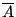
は、次のように定める。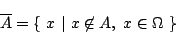
◇◇
2つの集合が2つの条件、
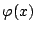
と
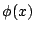
で定められている。
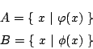
この時、1.
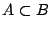
であることは、
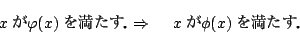
となる。
つまり、
が
の“十分条件”であることと、同じことを意味する。
2. 2つの条件
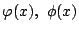
に対して
条件「または」を∨、条件「かつ」を∧と書く。
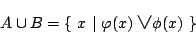
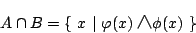
3. 補集合は、条件
の否定に対応する。
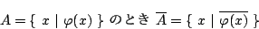
◇◇
ドモルガンの法則。
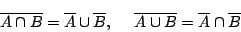
これは次のように示される。
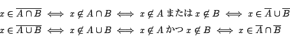
よって、次の「かつ(∧)」「または(∨)」「否定」に関する法則が対応する。
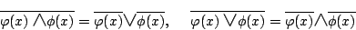
◇◇
僕の文章には、関数と微積分が足りない。
簡単な図形の幾何学で、平均変動率と面積の総和の、逆演算だ。
グラフの接線と面積を求めているだけだ。
◇◇
ニュートンは、グラフに接線と面積を付け足した。
予測と集積が出来る。
良く分からない。何も分からない。
◇◇
1つ1つ右に行くにつれて、積分で面積を拡大していけば
その1つ1つの量が増え、集積される。
その微分を出せば、接線で、
1つ1つ、変化のカタチが変わっていくのが分かる。
◇◇
宇宙の法則は、常に同じです。変わることはありません。
単位を無視してしまえば、ただ、そのあることをあることと言って、
比例している、反比例している、という関係を分かっているだけです。
ただ、そのあることの性質を分かっているのが、物理です。
昔の映画が今でも面白いように、世界は何も変わりません。
中世の時代から、何も変わりません。王と金に奉仕するだけの世界です。
金には、色んなものがあります。
自動車、家屋、家電製品、家具、衣服、食べ物、などがあります。
◇◇
ドイツとフランスで悩んでいたが、ドイツにすることに決めた。
ドイツ史、ドイツ語、カントをしたい。
なぜドイツにしたのかと言うと、
フランスは普通、フランス史、フランス語、デカルトだ。
デカルトは数学者だ。数学が分からないと、分からないだろう。
◇◇
奴隷の世界とは言うが、労働はしなければならない。
助け合いの世界が金と分配である。良い世界だ。
仕事をするために、学校で学ぶ。
習得したことを生かすために、基礎と応用がある。
数学は覚えるだけだが、覚えるのも賢い。
３と２をかけて６になることを覚えることで、３ケタのひっ算が出来る。
きちんと微積分が出来る。きちんと運動が出来る。
◇◇
数学には、関数というものがあり、二次関数でも三角関数でも、関数は関数だ。
積分では、関数f(x)の論理を考える。関数はどれも同じ。そこが、抽象的な思想だ。
積み重ねは、論理を覚えて、簡単な基礎を覚えて、応用の式を考える。
基礎は、部品のようなもので、基本的な法則や方法を覚え、さらに応用で適用する。
パソコンのコマンドと良く似ている。
◇◇
積分は、図形の変化した部分を総和として面積を出す。
関数が図形になるのだろう。
◇◇
物理は、普通のこの世界。
自動車に乗っていると、運動が多い。
ものを持つと、力が多い。
見ていると、光と影が多い。
音は、普通に多い。川を見ていると、波が多い。
そして、機械を見ると、電気が多い。
エネルギーや、原子も、宇宙も多く見える。
関数と微積分は難しい。図形の面積の変化、関数の変わりゆく変化を考えている。
◇◇
書いたものだけを分かっているからおかしい。書いた以外のものも分かれば良い。
死ぬのをやめて、全部生きれば治る。
本当に適応できなくなっていた。文字が読めない。
一生覚えるものが賢い。そうすると、テレビなんか見なくていい。
地球は回っている。地質学や生物学では、古代の地球では、恐竜が栄えていた。
どうやって人類はアフリカから別の大陸に渡ったのだろうか。
古代には、魚は居たはずだ。そうすると、魚類と哺乳類がかけ合わさったものが現れ、それが泳いで大陸へと渡り、それが進化して人間となったのかもしれない。
生命は、海から生まれた。単純な２つに分裂するものが、さらに４つに分裂するようになるまでには、生命は居なかった。ただ、海と陸地が広がっていた。
太陽は、最初からあった。放っておくと、地球が出来たのである。
生命は、かつてどこかの宇宙で栄華を極めていた。しかし、死に絶え、皆地球にやってきたのである。
◇◇
三角比は、各辺の比を覚えて、sinθとし、sinとcosを変換する。
◇◇
抽象化して予測する。それで当てていると、物理的に分かるようになる。
微積分は、まず導関数と微分、面積と積分の概念を覚え、次に簡単な論理学を覚え、さまざまな微積分を覚えれば良い。
二次関数は、累乗の概念を覚え、放物線のグラフの見た目を覚え、関数の式とグラフの対応関係を覚え、向きや位置を考える。
方程式は、項と式の概念を覚え、論理的な法則を覚え、移項や因数分解、論理的な証明の方法を覚える。
動物は、生きる。
食べ、食物連鎖をする。
繁殖し、子供を育てる。
遺伝する。
植物は光合成をする。
種を作って子を残す。
太陽の方向に伸びる。